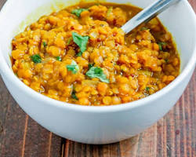

Red lentils (Adas Ahmar) cook much faster than traditional brown lentils. They break down into a thick, comforting consistency and are an extremely cheap, heavy source of plant-based protein and clean carbs.
